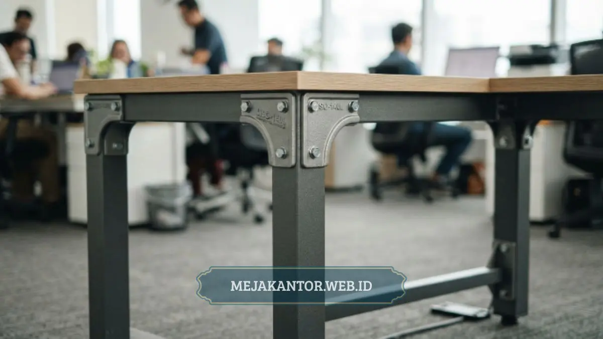

Meja Staff L-Shape MSO-140L menawarkan daun meja luas dan konstruksi kokoh yang dirancang untuk menopang kebutuhan kerja harian dengan banyak perangkat dan dokumen di atas meja.
- Bentuk L-Shape memberi area kerja lebih luas dibanding meja lurus standar
- Daun meja lebar mendukung penggunaan banyak perangkat sekaligus
- Konstruksi rangka dirancang untuk menopang beban kerja harian secara stabil
- Cocok untuk staf dengan tugas administratif maupun teknis yang membutuhkan ruang kerja luas
- Desain tetap ringkas meski memiliki area kerja yang lebih besar dari meja standar
Daftar Isi Artikel
- Apa Kelebihan Utama Meja Staff L-Shape MSO-140L?
- Bagaimana Konstruksi Meja Ini Menopang Kebutuhan Kerja Harian?
- Untuk Kebutuhan Kerja Seperti Apa Meja Ini Paling Direkomendasikan?
- Bagaimana Daun Meja Luas Ini Memengaruhi Produktivitas Kerja?
- Bagaimana Perbandingan Meja Ini dengan Meja Staff Standar Lainnya?
- Bagaimana Perawatan yang Tepat untuk Menjaga Kondisi Meja Ini?
Apa Kelebihan Utama Meja Staff L-Shape MSO-140L?
Kelebihan utama Meja Staff L-Shape MSO-140L terletak pada kombinasi daun meja yang luas dengan konstruksi rangka yang kokoh, sehingga meja tetap stabil meski digunakan untuk menopang banyak perangkat kerja sekaligus.
Bentuk L-Shape memberi dua sisi area kerja yang dapat difungsikan secara terpisah, misalnya satu sisi untuk perangkat komputer dan sisi lainnya untuk dokumen atau pekerjaan tulis tangan. Desain ini sangat membantu staf yang pekerjaannya membutuhkan multitasking di satu meja tanpa harus berpindah tempat.
Selain itu, area sudut pada bentuk L-Shape memberi ruang tambahan yang biasanya tidak dimiliki meja lurus standar, sehingga total luas permukaan kerja terasa lebih maksimal meskipun jejak ruang yang dibutuhkan relatif proporsional.
Bagaimana Konstruksi Meja Ini Menopang Kebutuhan Kerja Harian?
Konstruksi Meja Staff L-Shape MSO-140L dirancang dengan rangka penopang yang ditempatkan pada titik-titik strategis untuk menjaga kestabilan daun meja meski menanggung beban kerja dalam waktu lama.
Penempatan kaki dan penyangga tambahan pada area sudut membantu mengurangi risiko lenturan pada daun meja, terutama saat digunakan untuk menopang perangkat berat seperti monitor ganda atau printer kecil. Material daun meja yang digunakan umumnya memiliki permukaan yang tahan gores ringan dan mudah dibersihkan, sehingga cocok untuk penggunaan intensif harian di lingkungan kantor.
Konstruksi semacam ini juga membuat meja lebih tahan terhadap perubahan suhu maupun kelembapan ruangan dibanding meja dengan material yang lebih tipis.
Untuk Kebutuhan Kerja Seperti Apa Meja Ini Paling Direkomendasikan?
Meja Staff L-Shape MSO-140L paling direkomendasikan untuk staf dengan beban kerja administratif maupun teknis yang membutuhkan ruang kerja luas dalam satu area. Staf bagian keuangan, desain, atau operasional yang sering bekerja dengan banyak dokumen fisik sekaligus perangkat komputer akan merasakan manfaat langsung dari luasnya daun meja pada model ini.
Selain itu, meja ini juga sesuai untuk kantor yang menerapkan konsep ruang kerja semi-privat, di mana bentuk L-Shape dapat sekaligus berfungsi sebagai pembatas visual ringan antara area kerja satu staf dengan staf lainnya tanpa memerlukan partisi tambahan.

Bagaimana Daun Meja Luas Ini Memengaruhi Produktivitas Kerja?
Daun meja yang luas memberi ruang lebih bagi staf untuk mengatur tata letak dokumen, perangkat, dan alat kerja lain tanpa terasa sempit atau berantakan. Ruang kerja yang tertata rapi berkontribusi pada efisiensi kerja karena staf tidak perlu terlalu sering memindahkan barang untuk mendapatkan ruang tambahan saat mengerjakan tugas tertentu.
Selain aspek kenyamanan fisik, ruang kerja yang cukup luas juga membantu mengurangi rasa sesak yang dapat memengaruhi konsentrasi kerja dalam jangka panjang, terutama bagi staf yang menghabiskan sebagian besar waktu kerja di depan meja.
Bagaimana Perbandingan Meja Ini dengan Meja Staff Standar Lainnya?
Dibandingkan meja staff standar berbentuk lurus, Meja Staff L-Shape MSO-140L menawarkan area kerja tambahan pada bagian sudut tanpa memerlukan tambahan ruang yang signifikan dari sisi tata letak kantor. Meja lurus standar umumnya lebih ringkas dan cocok untuk ruang kerja terbatas, namun kurang optimal bagi staf yang membutuhkan area kerja ganda untuk multitasking.
Perbedaan lain terletak pada fleksibilitas penataan ruang. Bentuk L-Shape memungkinkan meja diposisikan menghadap sudut ruangan, sehingga memaksimalkan pemanfaatan area yang sebelumnya kurang optimal digunakan pada tata letak kantor konvensional.
Bagaimana Perawatan yang Tepat untuk Menjaga Kondisi Meja Ini?
Perawatan Meja Staff L-Shape MSO-140L relatif mudah karena permukaan daun mejanya umumnya dirancang tahan terhadap gores ringan dan noda cairan sehari-hari. Membersihkan permukaan meja secara rutin dengan kain lembap dan menghindari benda tajam yang bersentuhan langsung dengan daun meja dapat membantu menjaga tampilan meja tetap baik dalam jangka panjang.
Bagian rangka dan sambungan sebaiknya diperiksa secara berkala, terutama pada titik-titik penyangga di area sudut L-Shape yang menopang beban lebih besar dibanding bagian lurus meja. Pemeriksaan rutin ini membantu mendeteksi lebih awal apabila ada baut yang mulai longgar akibat penggunaan jangka panjang, sehingga perbaikan dapat dilakukan sebelum memengaruhi kestabilan meja secara keseluruhan.
Meja Staff L-Shape MSO-140L menjadi pilihan yang relevan bagi kantor yang membutuhkan area kerja luas dengan konstruksi kokoh untuk mendukung produktivitas harian staf. Kombinasi bentuk L-Shape dan daun meja lebar membuat meja ini cocok untuk berbagai jenis pekerjaan yang membutuhkan multitasking di satu area kerja. Untuk kebutuhan ruang kerja lebih lengkap, Anda dapat mengeksplorasi lini meja staff operasional dan pilihan partisi pendukungnya.
Dapatkan Penawaran Harga Spesial Meja Staff MSO-140L
Tersedia pilihan warna top table, ukuran custom, dan opsi penambahan laci gantung untuk kebutuhan pengadaan kantor Anda.
Tanya Spesifikasi via WhatsApp 0889-8964-3555
Mega Anggun
Penulis Konten & Spesialis Penataan Interior Kantor. Berpengalaman dalam memberikan tips ergonomi dan memilih furnitur terbaik untuk menunjang produktivitas kerja.